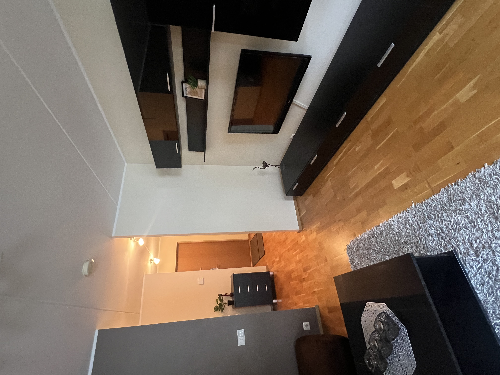

Parketi paigaldus Tallinnas ja Harjumaal
Laminaadi, laudparketi ja põrandaliistude korrektne paigaldus.

RK Meistrid OÜ tegutseb veebilehe renoveerikodu.ee kaudu ning pakub parketi ja laminaatpõrandate paigaldust Tallinnas ja Harjumaal. Päringu hindamisel lähtume objekti seisukorrast, tööjärjekorrast, materjalidest ja realistlikust ajakavast.
Parketi paigaldus peab arvestama aluspinna tasasust, niiskust, paisumisvuuke ja ruumi kasutuskoormust. Renoveeri Kodu paigaldab laminaati, laudparketti ja põrandaliiste korterites, eramutes ning äripindadel.
Korralikult paigaldatud põrand ei nagise, ei laineta ja säilitab välimuse ka igapäevase kasutuse juures. Vajadusel aitame hinnata, kas vana põrand tuleb eemaldada, kas aluspind vajab tasandust ja milline alusmaterjal sobib konkreetsele ruumile.
Mida teenus sisaldab?
- laminaadi ja laudparketi paigaldus
- vana põrandakatte eemaldus ja aluspinna ettevalmistus
- alusmaterjali, paisumisvuukide ja lävekohtade lahendused
- põrandaliistude, üleminekuliistude ja detailide viimistlus
Millal seda tellida?
Parketi paigaldust tellitakse sageli koos maalritööde, kipsitööde või korteri tervikremondiga. Õige tööjärjekord aitab vältida värske põranda kahjustamist ja annab puhta lõpptulemuse.
Tööprotsess
Aluspinna kontroll
Mõõdame tasasust, hindame niiskusriski ja kontrollime, kas põrand vajab lihvimist, tasandust või puhastamist.
Paigaldusplaan
Planeerime paigaldussuuna, lõiked, paisumisvuugid ja üleminekud uste ning teiste põrandakatetega.
Liistud ja üleandmine
Paigaldame liistud, kontrollime liikumisruumi ja koristame tööala enne üleandmist.
Põrandatööde hind ja ettevalmistus
Parketi paigalduse hind sõltub aluspinna seisukorrast, ruumi kujust, ukseavade arvust, üleminekuliistudest ja valitud materjalist. Ebatasane aluspind võib vajada tasandamist, sest muidu võivad ühendused hakata liikuma või põrand nagisema. Pakkumiseks on kasulik teada ruutmeetreid, vana põrandakatet ja soovitud parketi tüüpi.
Pärast paigaldust kontrollime paisumisvuuke, uste liikumist, liistude kinnitust ja üleminekuid teiste põrandakatetega. Kui põrand vahetatakse koos seinte värvimisega, soovitame teha tolmused ja niisked tööd enne lõplikku põrandapaigaldust.
Kohalik kogemus ja tööde täpsustamine
Parketi paigaldusel tuleb Tallinna korterites sageli arvestada vana põranda kõrgust, ukselehti ja üleminekuid koridori või köögi põrandaga. Päringu hindamisel vaatame alati, milline on objekti ligipääs, kas töö toimub elatud ruumis, millised pinnad vajavad kaitsmist ja milline on mõistlik tööjärjekord. See aitab vältida olukorda, kus üks etapp tuleb hiljem uuesti avada või parandada.
Renoveeri Kodu eesmärk on anda selge ja realistlik hinnang enne töö alustamist. Kui fotodest ei piisa, lepime kokku objekti ülevaatuse. Nii saab täpsustada materjalid, ajakulu, seotud teenused ja võimalikud riskikohad enne, kui töö päriselt käima läheb.
Parketi puhul tasub enne töö algust läbi mõelda ka mööbli liigutamine, vana põranda utiliseerimine ja ruumi kasutusse võtmise aeg. Nii saab paigalduse planeerida ilma, et värske põrand saaks kohe pärast üleandmist liigset koormust või niiskust.
Parketi paigalduse hinnad
Parketi paigalduse hind sõltub aluspinna tasasest, vana põranda eemaldusest, liistudest, üleminekutest ja ruumi kujust. Ebatasane põrand võib vajada enne paigaldust parandust, sest muidu võivad ühendused liikuma hakata.
Hinnapäringu kiirendamiseks lisa võimalusel fotod, mõõdud, objekti asukoht ja soovitud tähtaeg. Nii saame paremini aru, kas töö vajab objektikülastust või saab esmase hinnangu anda kirjelduse põhjal.
Praktiline tööinfo parketi paigalduse kohta
Materjalid
Parketi puhul on tähtis põrandakatte tüüp, alusmaterjal, niiskustõke ja liistude lahendus. Laminaat, laudparkett ja kalasabamustriga põrand käituvad erinevalt ning vajavad erinevat aluspinna täpsust.
Ajakulu
Ajakulu sõltub ruumi kujust, vana katte eemaldusest, aluspinna tasandamisest ja liistude arvust. Uus põrand tuleks paigaldada siis, kui märjad ja tolmused tööd on lõppenud.
Hinnategurid
Hinda mõjutavad ruutmeetrid, aluspinna kõrguste erinevus, ukseavade lõiked, torude ümbrused, liistude tüüp ja see, kas vana põrand tuleb eemaldada ning ära vedada.
Levinud vead
Levinud vead on paisumisvuugi puudumine, liiga niiske aluspind, vale alusmaterjal ja põranda paigaldus enne seda, kui ruumi niiskus on stabiliseerunud.
Soovitused kliendile
Too materjal objektile piisava varuga ja lase sellel ruumi tingimustega kohaneda. Kui võimalik, vali liistud ja üleminekuprofiilid enne paigalduspäeva.
Korduma kippuvad küsimused
Kas vana põrand tuleb enne eemaldada?
See sõltub vana katte seisukorrast, kõrgusest ja aluspinna tasasest. Hindame olukorra enne töö algust.
Kas parketti saab paigaldada kööki?
Jah, kuid materjali valik ja niiskuskoormus tuleb hoolikalt läbi mõelda.
Kui sirge peab aluspind olema?
Tootja nõuded erinevad, kuid ebatasane aluspind võib põhjustada naginat ja ühenduste purunemist.
Kas paigaldate ka liistud?
Jah, teeme ka põrandaliistude ja üleminekuliistude paigalduse.
Kas vana põrand tuleb enne parketti eemaldada?
See sõltub vana katte tüübist, kõrgusest ja stabiilsusest. Kui vana põrand liigub, kriuksub või on niiske, tuleb probleem enne uut katet lahendada.
Kas parketti saab paigaldada ebatasasele põrandale?
Ei ole soovitatav. Ebatasane aluspind võib põhjustada lukusüsteemi purunemist, õõnsat heli ja põranda liikumist. Vajadusel tuleb aluspind tasandada.
Kui suur materjalivaru tuleks arvestada?
Tavaliselt arvestatakse lõigete ja praagi jaoks varu. Lihtsa ruumi puhul võib varu olla väiksem, keerulise mustri või paljude nurkadega ruumis suurem.
Kas liistud paigaldatakse kohe pärast parketti?
Tavaliselt jah, kui seinad on valmis ja värv kuivanud. Kui seinaviimistlus jätkub, võib liistud paigaldada hiljem, et neid mitte kahjustada.
Milliste töödega parketi paigaldus tavaliselt seostub?
Parketi paigaldus tuleb ajastada pärast tolmuseid ja märgi töid. Enne uut põrandat võib olla vaja vana põrandakatte eemaldamist või aluspinna korrigeerimist; pärast paigaldust lõpetavad ruumi sageli seinte ja liistude viimistlustööd. Hindade ja töömahu võrdlemiseks sobib põrandatööde hinnakirja osa, ning tehtud töö näitena aitab parketi paigaldus korteris Tallinnas.